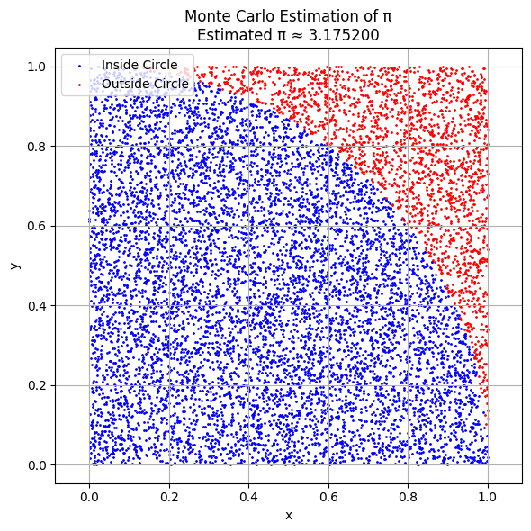
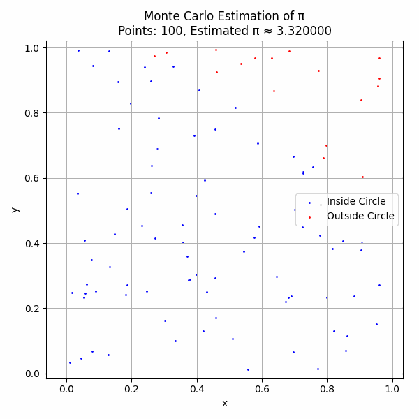
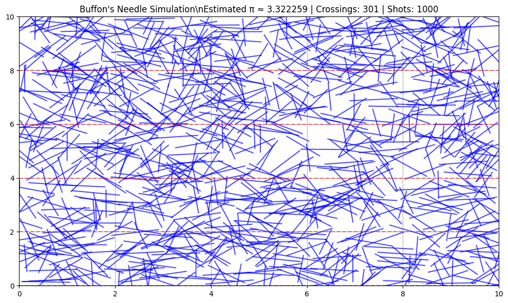
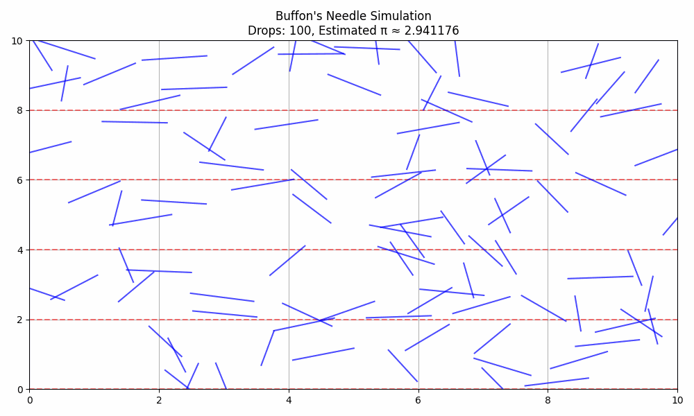
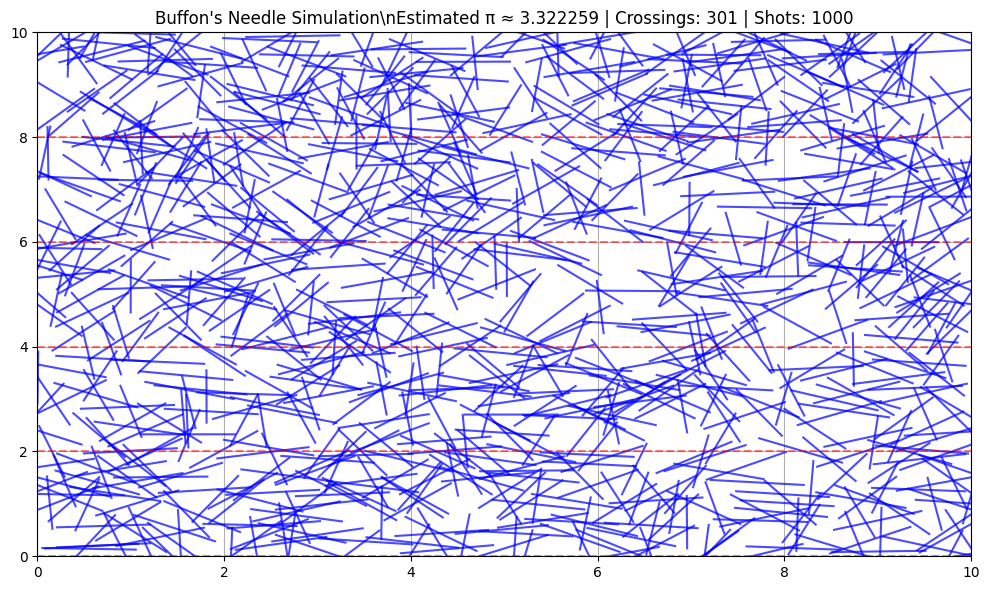
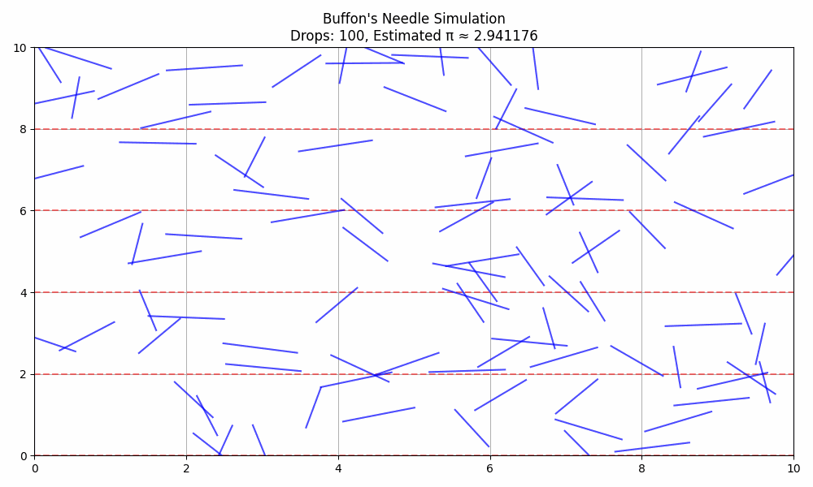

Problem 2
💠 Estimating $\pi$ Using Monte Carlo Methods
📌 Part 1: Estimating $\pi$ Using a Circle
🔹 1. Theoretical Foundation
We estimate $\pi$ using geometric probability. A square of side 1 has area 1, and a circle inscribed in it (radius = 1) has area:
\[
A_{\text{circle}} = \pi r^2 = \pi
\]
If we randomly throw points into the square, the probability of landing inside the circle is:
\[
P = \frac{\text{Area of Circle}}{\text{Area of Square}} = \frac{\pi}{4}
\]
So:
\[
\pi \approx 4 \cdot \frac{\text{points inside circle}}{\text{total points}}
\]
🔹 2. Python Simulation Code (for Google Colab)
import numpy as np
import matplotlib.pyplot as plt
def monte_carlo_pi(n_points=10000):
x = np.random.rand(n_points)
y = np.random.rand(n_points)
inside_circle = x**2 + y**2 <= 1
pi_estimate = 4 * np.sum(inside_circle) / n_points
return x, y, inside_circle, pi_estimate
# Run simulation
x, y, inside_circle, pi_estimate = monte_carlo_pi(10000)
# Plotting
plt.figure(figsize=(6,6))
plt.scatter(x[inside_circle], y[inside_circle], color='blue', s=1, label='Inside Circle')
plt.scatter(x[~inside_circle], y[~inside_circle], color='red', s=1, label='Outside Circle')
plt.title(f"Monte Carlo Estimation of π\nEstimated π ≈ {pi_estimate:.6f}")
plt.xlabel("x")
plt.ylabel("y")
plt.axis("equal")
plt.legend()
plt.grid(True)
plt.tight_layout()
plt.show()
 
🔹 3. Analysis & Convergence
As you increase the number of points \(n\), the estimate gets closer to the true value of \(\pi \approx 3.14159\). The error decreases as:
\[
\text{Error} \propto \frac{1}{\sqrt{n}}
\]
📏 Part 2: Estimating $\pi$ Using Buffon’s Needle
🔹 1. Theoretical Foundation
A needle of length \(L\) is dropped on a floor with parallel lines spaced \(D\) units apart (with \(L \leq D\)). The probability it crosses a line is:
\[
P = \frac{2L}{\pi D}
\]
Solving for \(\pi\):
\[
\pi \approx \frac{2 \cdot L \cdot N}{D \cdot C}
\]
Where:
- \(N\) = number of throws
- \(C\) = number of crossings
🔹 2. Python Simulation Code
def buffon_needle_simulation(n_drops=10000, needle_length=1.0, line_distance=2.0):
if needle_length > line_distance:
raise ValueError("Needle must be shorter than the line spacing.")
theta = np.random.uniform(0, np.pi/2, n_drops) # angle of drop
d = np.random.uniform(0, line_distance/2, n_drops) # distance from line center
crosses = d <= (needle_length/2) * np.sin(theta)
num_crosses = np.sum(crosses)
if num_crosses == 0:
return None, 0
pi_estimate = (2 * needle_length * n_drops) / (line_distance * num_crosses)
return pi_estimate, num_crosses
# Run simulation
pi_buffon, crossings = buffon_needle_simulation()
print(f"Buffon's Needle Estimate of π: {pi_buffon:.6f} with {crossings} crossings")
 



🔹 3. Needle Visualization (Bonus for Report)
# Visualizing needle drops
np.random.seed(0)
n_needles = 100
x_center = np.random.uniform(0, 10, n_needles)
y_center = np.random.uniform(0, 10, n_needles)
angles = np.random.uniform(0, np.pi, n_needles)
L = 1.0
x1 = x_center - (L/2) * np.cos(angles)
y1 = y_center - (L/2) * np.sin(angles)
x2 = x_center + (L/2) * np.cos(angles)
y2 = y_center + (L/2) * np.sin(angles)
plt.figure(figsize=(10, 6))
for i in range(n_needles):
plt.plot([x1[i], x2[i]], [y1[i], y2[i]], 'b-', alpha=0.7)
for y in np.arange(0, 11, 2):
plt.axhline(y, color='r', linestyle='--', alpha=0.5)
plt.title(\"Buffon's Needle Simulation\")
plt.xlim(0, 10)
plt.ylim(0, 10)
plt.grid(True)
plt.tight_layout()
plt.show()
📊 Summary & Comparison
| Method | Formula | Convergence Rate | Accuracy | Visualization |
|---|---|---|---|---|
| Circle Method | \(\\pi \\approx 4 \\cdot \\frac{\\text{inside}}{\\text{total}}\) | \(O(1/\\sqrt{n})\) | Fast | Very clear |
| Buffon’s Needle | \(\\pi \\approx \\frac{2LN}{DC}\) | \(O(1/\\sqrt{n})\), slower | Needs more trials | Visual and physical |